CS194-26 Project 2 - Eric Leong
Part 1.1: Finite Difference Operator
In this section, we will use the difference operators to generate 2 derivative images, and compute their gradient magnitude and finally apply a threshold to generate binary threshold numbers to form the resulting image.

The difference operators, dx and dy, act as an approximation to corresponding partial derivatives, meaning that dx computes the rate of change on the x axis, dy computes the rate o f change on the y axis. We can interpret these with respect to the image by observing edges. For the dx operator, a vertical edge represents pixels with high dx, while for the dy operator, a horizontal edge has pixels with high dy values. We can utilize the difference operators as edge detectors, by computing the gradient magnitude, which involved finding the square root of the sum of dx**2 and dy**2. We could see from the resulting image that our edge detection is fairly noisey, detecting the background as edges.
Part 1.2: Derivative of Gaussian Picture
In this section, we utilize a gaussian filter to remove most of the noise from the image since the gaussian filter acts as a low pass filter. We follow the same procedure as previous but we first start off by applying the gaussian filter on the original image. As we can see from the result, the filter removed much of the noise and allowed us to lower our threshold to make our edges around the cameraman more dense.
Utilizing the derivative theorem of convolution, which states that the derivative of a convolution is equivalent to the convolution of a derivative, we can make our process more efficient by computing the the derivative of the image first then applying the gaussian, which removes a step of computation.
As we can see, we still attain the exact same results as before.
Part 1.3: Image Straightening
In this section, we again compute the derivatives of the gaussian and applying the gaussian filter on top of it. However, instead of computing the gradient magnitude, we compute the gradient angle which determines the orientation of each pixel. Using this information, we are able to determine the best degrees of rotation of our image that maximizes the number of vertical and horizontal edges. As we know, vertical edges correspond to 90, -90 degrees while horizontal edges correspond to 180, 0, -180 degrees so we consider a edge as meeting our criteria if the pixel gradient angles fall within proximity of these degrees. In each of the follow examples, we display the original image, the image with the computed best rotation, and the histogram of gradient degrees for that best rotation.

Failure case
In this example, we could see that our original image is already oriented correctly by looking at the horizon. However, our algorithm still rotated our image ever so slightly, erroneously. This is likely because the image does not contain many horizontal or vertical edges that we can utilize as cues for determining the best rotation.
Part 2.1: Image "Sharpening"
In this section, we use the properties of high frequency pixels to seemingly "sharpen" images, by using an unsharp mask filter, which strengthens the high frequencies of an image.

Blurred to Sharpened
Here, we start off with blurring an already sharp image using a gaussian filter then applying our sharpening filter on it. As we can see, the resulting image is less "sharp" than the initial image and looks like it might've even lost some critical detail. Once we removed the high frequency pixels by blurring the image, the sharpening filter is unable to bring it back and we lose some essential information about the image. The sharpening filter only acts to strengthen the remanining high frequency pixels that weren't removed.

Part 2.2: Hybrid Images
In this section, we utilized both low and high frequencies to formulate images called hybrid images that appear to "morph" depending on how far away you view it. I formed 3 hybrid images, displaying the 2 original images and the resulting hybrid image. The image on the left is the image I used to form the low frequencies while the middle image is used for high frequencies. Therefore, we should only see characteristics of the high frequency image when we are viewing it closely. I additionally plotted the log magnitude of the fourier transform for the derek and nutmeg pictures.
Bells & Whistles
For Bells & Whistles, I implemented all of my hybrid images with color. I felt that color added a lot of vibrancy to the images, and being able to see the color of the high frequency image improved the morphing effect of the resulting image.
Derek and Nutmeg

 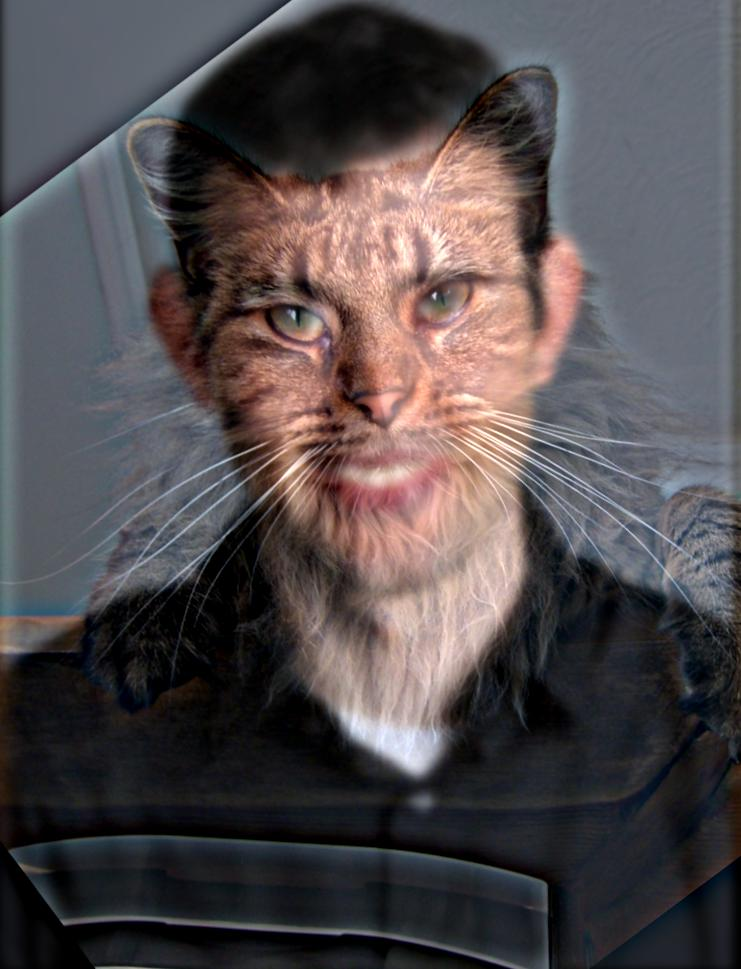
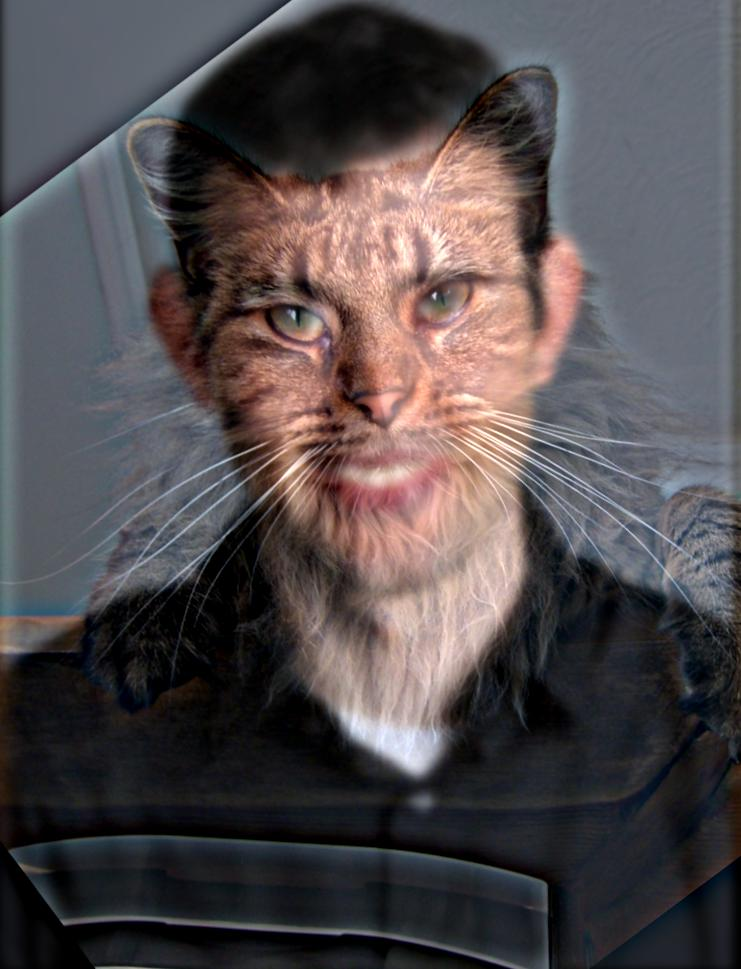
Fourier Frequency Magnitude
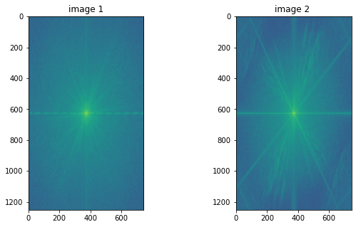 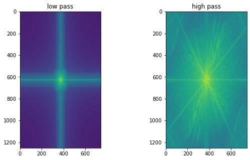 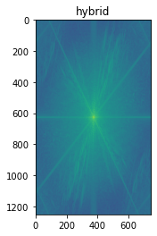Is DD Bread?
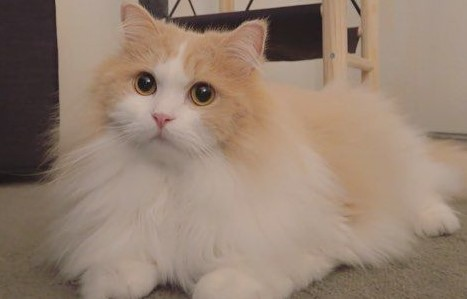 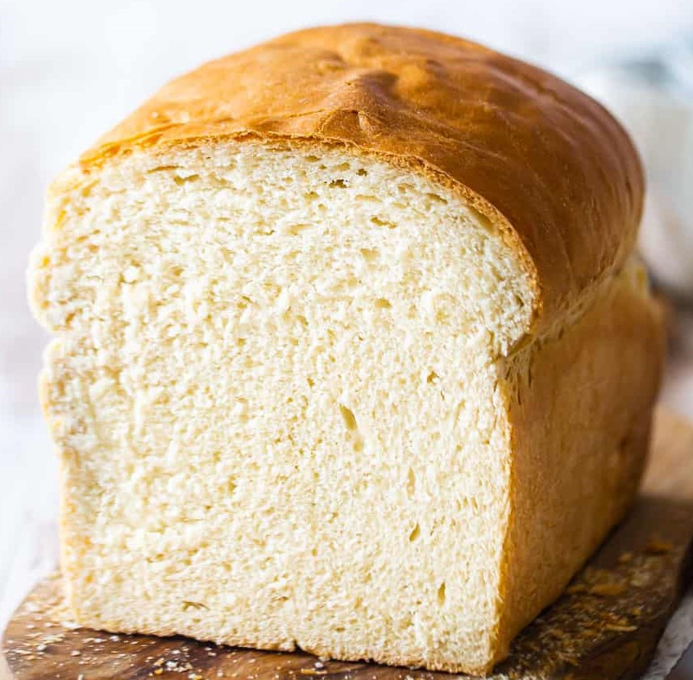 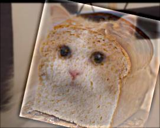Failure Case: Kim Kardashitrump
In our final hybrid image, I used a picture of Trump and Kim K. As we can clearly see, the resulting hybrid image is slightly disturbing. Although the face aligned alright, everything else such as the body and hair did not align because of the mismatch between the 2 images. This was a very fun image pair to work with however.
 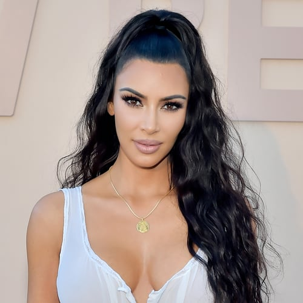
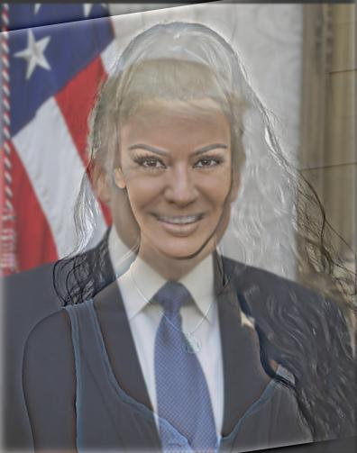
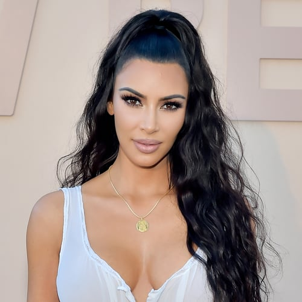
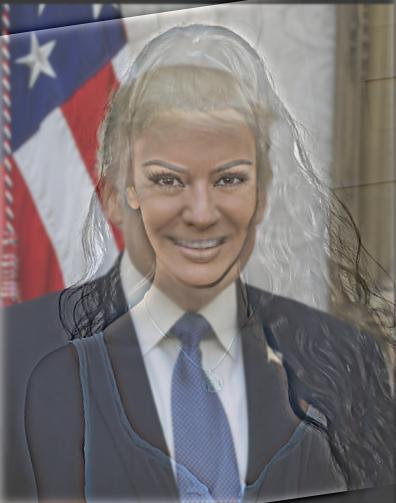
Part 2.3: Gaussian and Laplacian Stacks
In this section, we perform band pass filtering using Gaussian and Laplacian Stacks and display each of the frequency bands of the layers. We perform this on images with multiple resolution such as the lincoln painting, mona lisa, and the hybrid image we generated. In each of the laplacian stacks, the last image is of the last layer of the gaussian stack.
Part 2.4: Multiresolution Blending (a.k.a. the oraple!)
In this section, we utilize the laplacian and gaussian stack in order to seam together 2 images with a mask, applying a gaussian filter on the mask to create a blurring effect in the resulting image. For bells & whistles, I incorporated color into each of the images to improve the result. In each example, we applied the mask onto image 1 and blended with image 2, so that the "black regions" of the mask are where parts of image 2 could be found, and similarly, image 1 was contained in white regions. We had 3 examples total, with the last one using an irregular mask, shaped like a bridge. For that image, we also displayed the gaussian and laplacian stacks for each of the masked image as well as the blended image.


Sun and Moon
Bridge Borealis
Bridge Laplacian Stack
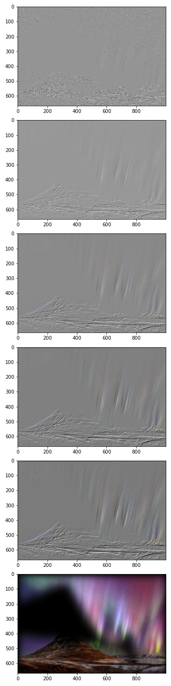Borealis Laplacian Stack

Hybrid Laplacian Stack
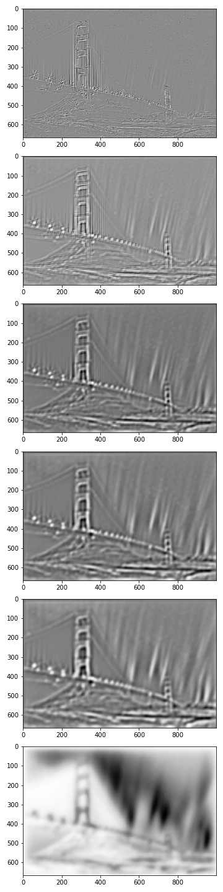Conclusion
I thoroughly enjoyed each section of the project, but I would say the most fascinating and important section was the one about image straightening, as I did not know that there were ways to measure the straightness of an image. I also really enjoyed the hybrid image section just because it was really fun to display some creativity and memes.